Cross-Validation Results: Automatic Report and Interpretation
Metrics by Fold
| Fold |
R2 |
MSE |
RMSE |
MAE |
| 1 |
-0.190561 |
365.818071 |
19.126371 |
16.307143 |
| 2 |
0.038530 |
111.423650 |
10.555740 |
10.178333 |
| 3 |
-13.752219 |
322.909683 |
17.969688 |
16.975000 |
| 4 |
-0.433798 |
253.662750 |
15.926793 |
14.468333 |
| 5 |
-0.393641 |
423.396017 |
20.576589 |
18.491667 |
Feature Importance (mean ± std)
| feature |
mean_importance |
std_importance |
| criq |
0.175249 |
0.064521 |
| semantic |
0.146183 |
0.061637 |
| reyword |
0.111403 |
0.055954 |
| reyfig |
0.103459 |
0.011151 |
| denomdescr |
0.094080 |
0.045145 |
| trog |
0.093544 |
0.039470 |
| phonemic |
0.084916 |
0.031189 |
| span_back |
0.068987 |
0.024249 |
| mmse |
0.062210 |
0.031856 |
| span_for |
0.059970 |
0.033131 |
Main Plots
feature_importances_mean_std.png
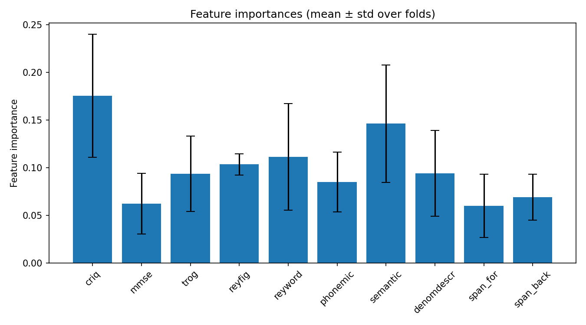
feature_importances_correlation_heatmap.png
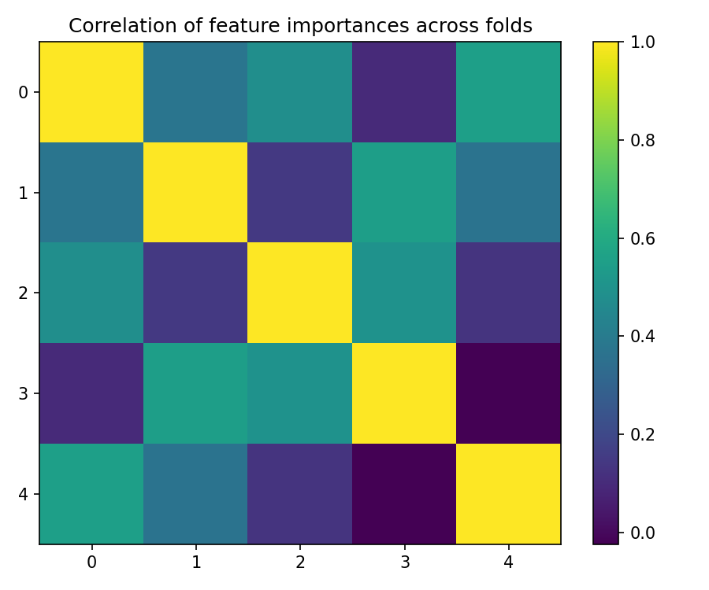
best_fold_2_feature_importances.png
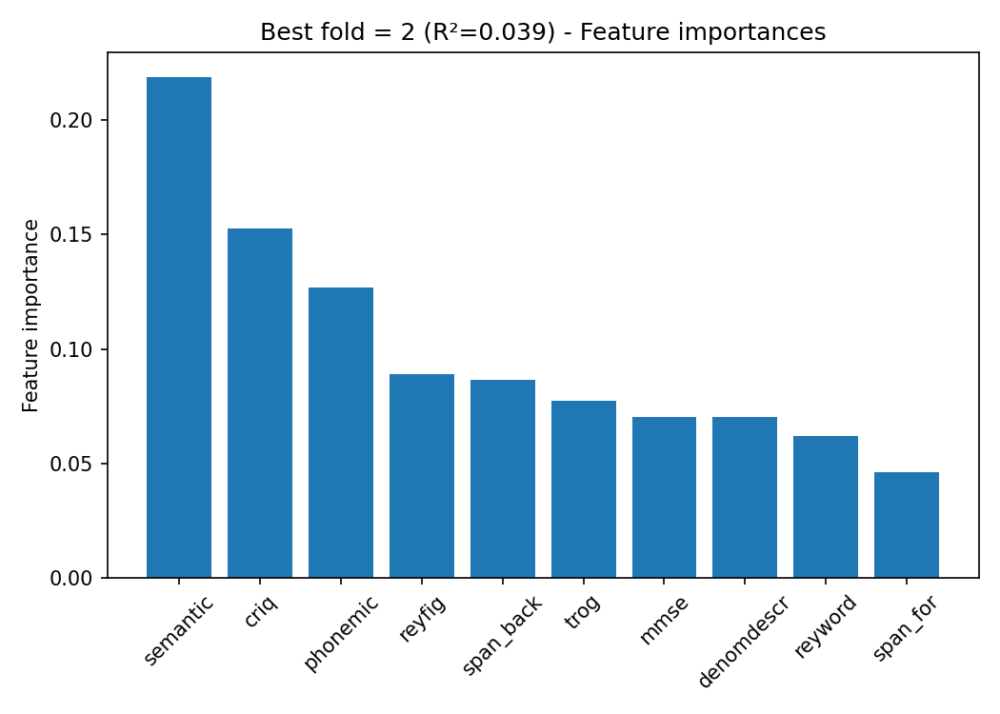
True vs Predicted Scatter Plots (by fold)
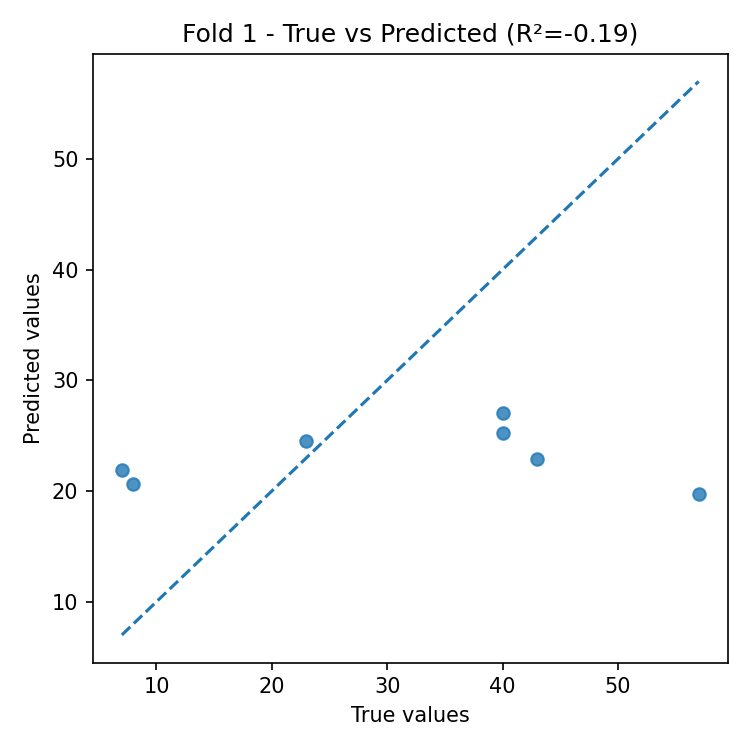
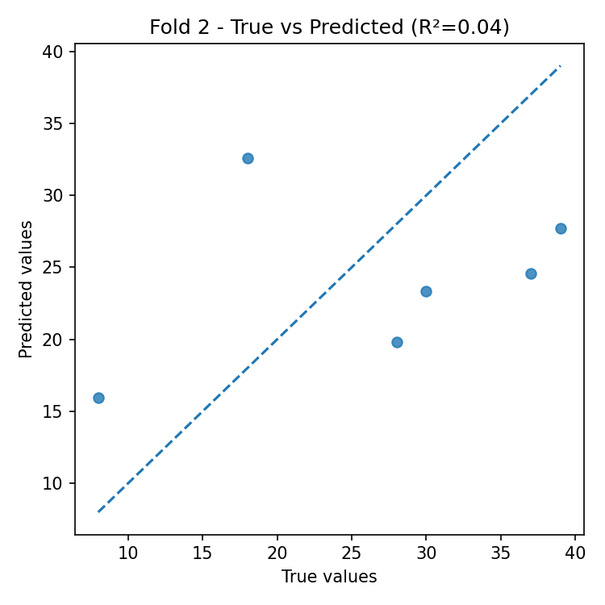
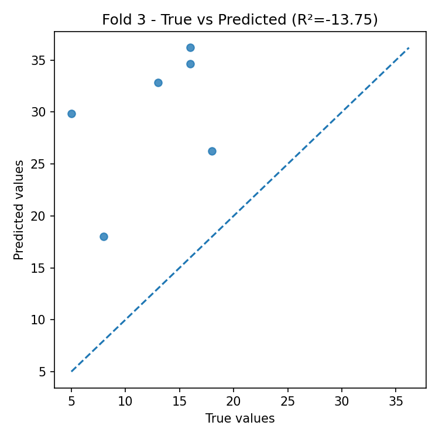
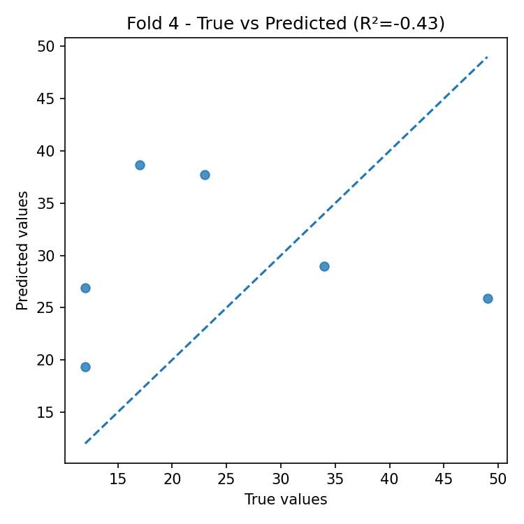
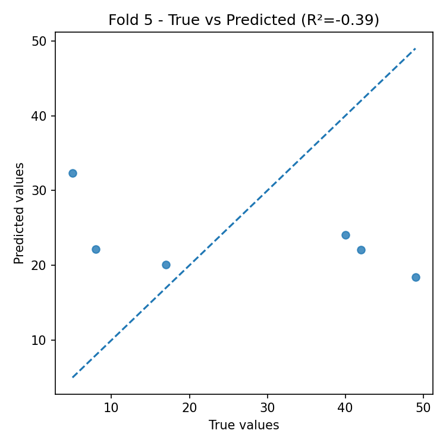
Residual Plots (by fold)
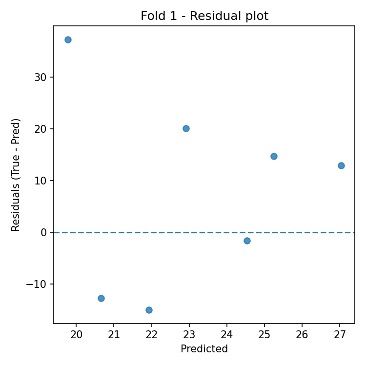
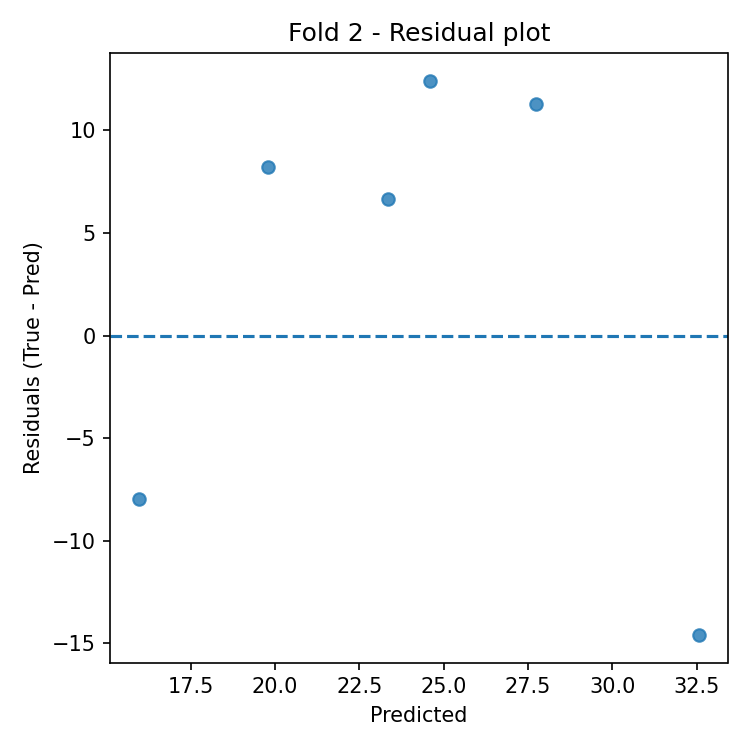
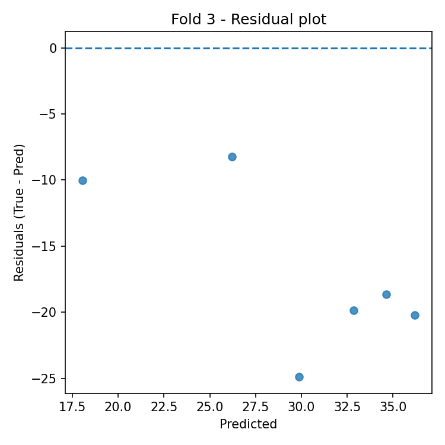
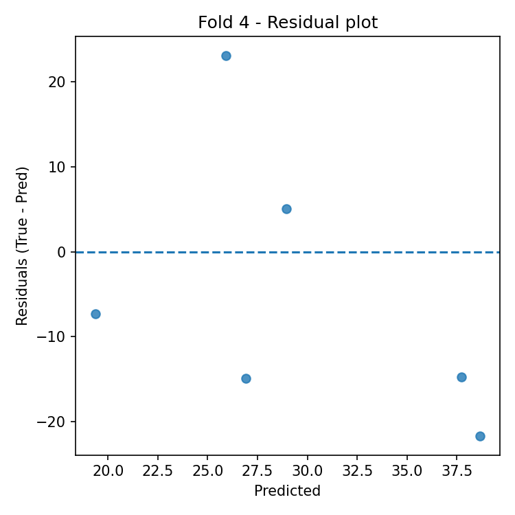
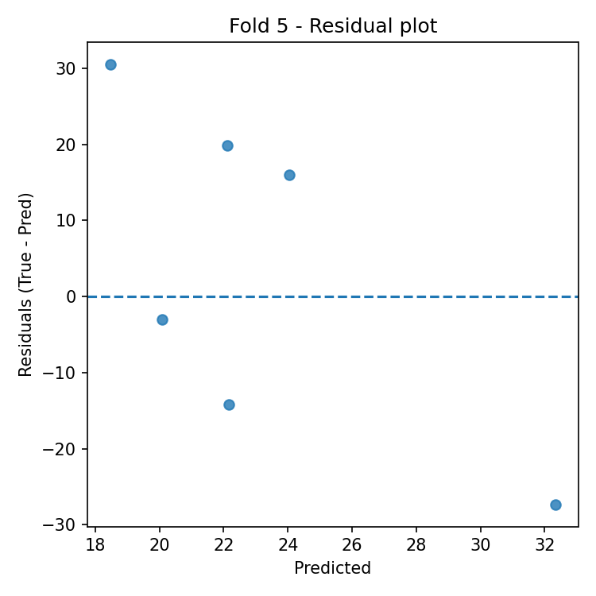
Automatic Interpretation
Overall Performance
- Mean R² across folds: -2.946 (± 6.044).
- Average error: RMSE = 16.831, MAE = 15.284 (same unit as target variable).
Model Stability
- R² variability across folds is high (std = 6.044).
- Average feature importance stability across folds: 0.040 (lower = more stable).
Most Important Features (average across all folds)
- Top-3: criq (0.175), semantic (0.146), reyword (0.111).
Best Fold
- Best fold: 2 with R² = 0.039.
- In the best fold, the most important features are: semantic (0.219), criq (0.153), phonemic (0.127).
Residual Analysis (best fold)
- Residuals–predictions correlation: -0.155 (0 ≈ absence of linear bias).
- |Residuals|–predictions correlation: 0.800 (positive values indicate possible heteroscedasticity).
- Outliers (|res| > 3·std): 0.